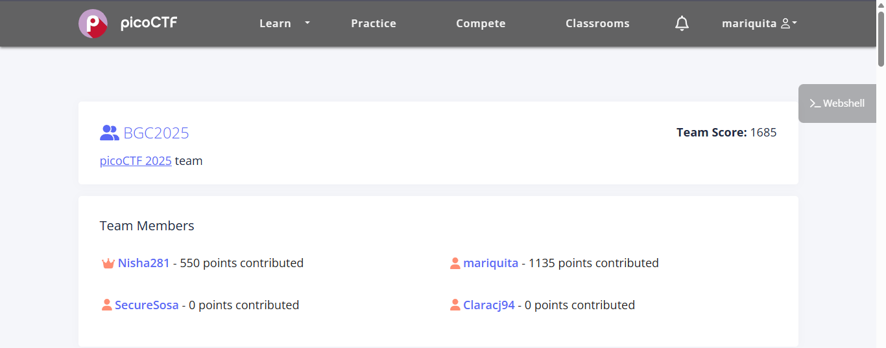
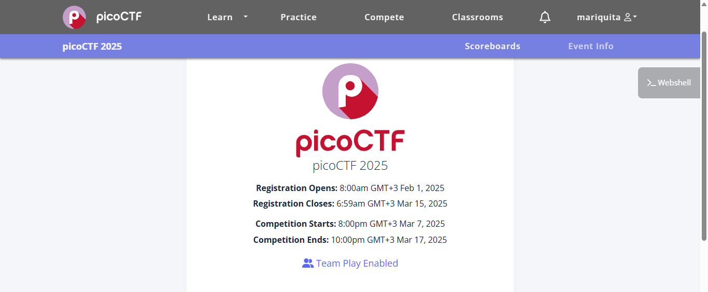
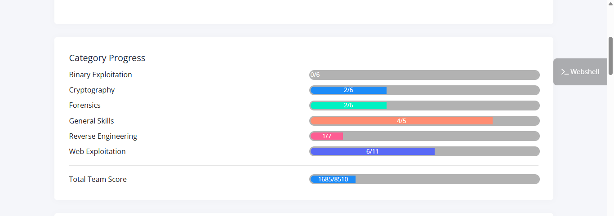

Wow I finally made it to write my first blog!!!
My First CTF Experience – PicoCTF 2025
I’ve always heard about how awesome Capture The Flag (CTF) competitions are. People like IppSec, LiveOverflow, John Hammond, The Cyber Mentor, Gynvael Coldwind, and Heath Adams always emphasize how important and fun they can be. And now, after participating in my first CTF—PicoCTF 2025—I can say with confidence that it was worth all the hype!
The Team – CyberSisters
CTFs are even more fun when you have an amazing team, and I was lucky to compete alongside some incredible teammates: Nisha, Samantha, and Clara. They are like my cybersisters! We worked together, shared knowledge, struggled through challenges, and celebrated our wins. It was an experience filled with learning, adrenaline, and teamwork.

PicoCTF2025

So considering this was my first actual serious CTF, I appreciate my friends who allowed me to really go at it and understood I needed a confidence boost or sorts and left me to solving the tasks, while they guide If I felt lost I made friends and played with and against my friends and I as happy the competition didn’t get between us thos there was tension at one point xD

And yh I was quite pleased with our performance considering this was our first time to partcipate in a CTF
The Challenge Breakdown 🏆
PicoCTF had a wide range of challenges covering different areas of cybersecurity.
Here are some of the categories we tackled:
- Binary Exploitation
- Cryptography
- Forensics
- General Skills
- Reverse Engineering
- Web Exploitation
While I found some quite easy I found some wicked 😂 eg Binary exploitation , Reverse engineering and a bit of Cryptography
Looking Ahead 🔥
PicoCTF 2025 was just the beginning! I’m officially hooked on CTFs, and I can’t wait to participate in more. My goal is to improve my skills in binary exploitation, forensics, and Active Directory attacks. I also want to start contributing to write-ups to help other beginners like me get started in the CTF world. This was an unforgettable experience, and I’m grateful to my team and everyone who supported me. If you’re thinking of getting into CTFs—do it! You won’t regret it.
So that is enough pleasantries don’t you think ?
# LET’S JUMP RIGHT INTO IT !!!!!

Hit me up on Twitter